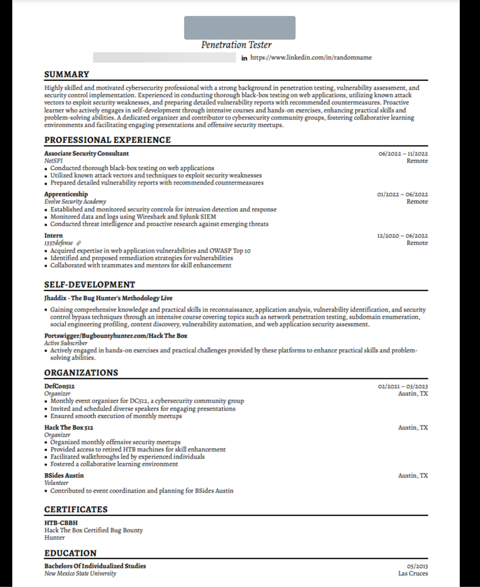
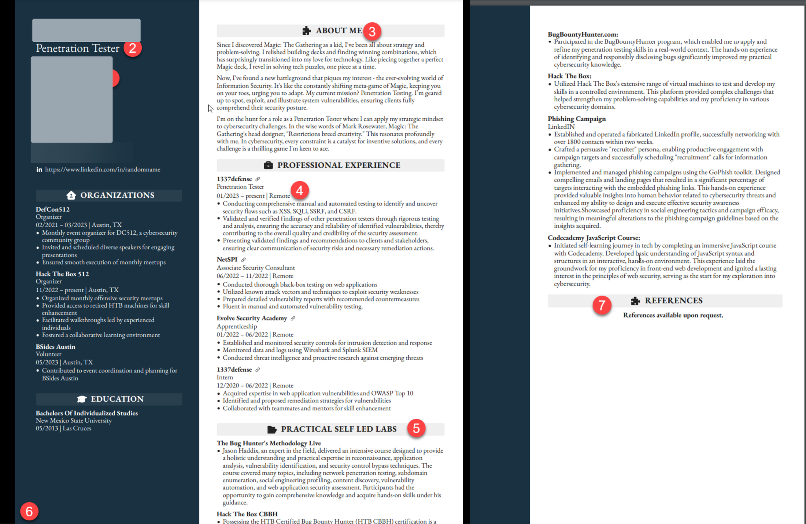
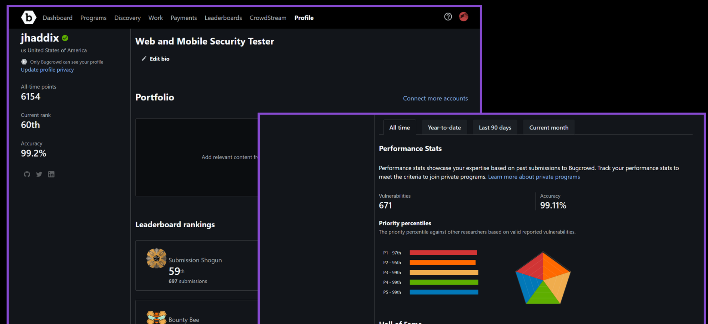
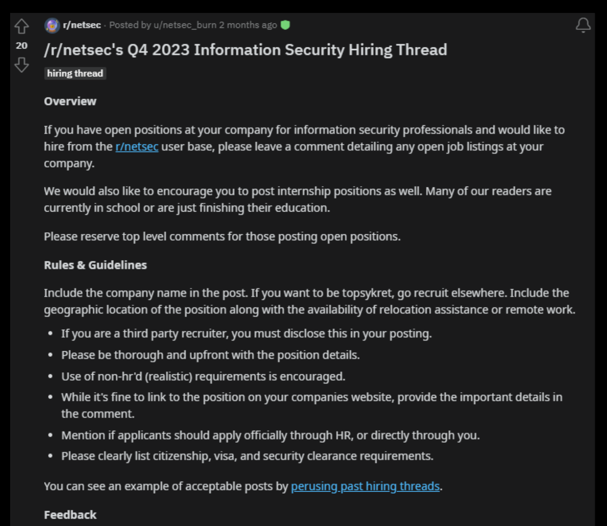

A roadmap and a resource library for becoming the strongest candidate you can be: what to learn, where to practice it, how to package yourself, how to find the opportunities worth having, and how to judge them once they arrive.
Nobody gets hired for potential alone. They get hired because someone can look at a body of evidence and make a low-risk decision. The evidence is what you have learned, what you have broken, what you have written, and who will vouch for you. This class is the order of operations for assembling that evidence, with the resources for each step.
It runs in six phases. You don't have to do them strictly in sequence, but the earlier ones make the later ones work. It's hard to write anything worth reading before you've practiced, and hard to get a referral before anyone has read you.
How to use this page. Six phases, rising. Each step names the artifact it leaves you holding, the thing you can show someone. The dashed return is the part people miss. A role you land is itself material for the next step up, so the second cycle goes far faster than the first. Modules 12–15 sit outside the sequence: the attendee Q&A, the tooling used in each job role, Jason Blanchard’s playbook, and the evidence on aptitude and work ethic that closes the guide.
MODULE 01
The {Payoff}
Before the resource lists, the case for doing any of it. Most career advice in security is about getting better at security. The missing half is making the work you do legible to other people, because that is what converts skill into a job offer.
The class's argument is that this one habit pays out along four separate axes, and that they compound. Evidence of your work gets you opportunities. Opportunities you didn't have to apply for come with better leverage. Better leverage buys you money and the right to choose what you work on. And the accumulated record means you're never one layoff away from starting over.
Originally presented as “Why Brand Building?”. The four pillars below are the class's own.
Opportunity
Enhanced job opportunities
Advantage in applications
Career development and advancement
Entrepreneurial opportunities
Pay
Negotiate from a place of strength
Always at the higher range
Titles
Impact
Shape your own destiny
Work on what interests you
Titles
Safety
Always have backups
Guarantee a certain type of lifestyle
Safety is the pillar people underrate. The other three are upside. This one is insurance. Entire security orgs get cut after a reorg or a breach, and when that happens the person with a public reputation has a warm network to fall back on. The person without one has a job board. You only find out which you are on the day you need it, so it has to be built before then.
Q&A + Discussion
MODULE 02
Red, Blue & {Purple}
Every resource list in this class is sorted by color, so you should know what the colors mean before you use them. They come from military wargaming, and they describe which side of a simulated conflict you're standing on.
In a war game, the red force is the aggressor and the blue force is the defender. Security adopted the terms wholesale: red teams attack, blue teams defend. Purple came later and is a different kind of word. There is no third army. Purple is what happens when red and blue share information with each other, so a purple role is defined by the handoff rather than by the attack or the defense.
You'll see the same three colors used for training tracks, job titles, conference villages and Discord channels. Knowing roughly which one you're drawn to is the only decision you need to make before starting Module 03, and you can change it later.
The three colors. Purple is where the other two overlap, so the roles in the lens are the ones that require both mindsets. The colors describe work, not people.
Hover or tap any role for a plain-English description of what the job involves.
Red · Offense
“How would someone get in?”
Purple · The bridge
“Did the defense actually work?”
Blue · Defense
“Did we see it, and what now?”
Jobs are blended
The colors are a useful way to organize study material and a misleading way to think about careers. Very few real jobs are purely one color, and the title on the requisition tells you almost nothing. “Security Engineer” is used for SOC work, for pentesting, for building internal tooling and for chasing compliance evidence, sometimes at the same company.
Some of what you will run into:
Smaller organizations blend everything. At a company with one or two security people you'll do vulnerability management, incident response, awareness training and vendor questionnaires in the same week. This is an excellent first job because it's unfocused. You find out what you like by being made to do all of it.
The best blue-team people think red. You cannot write a detection for an attack you don't understand. Detection engineering sits in the blue column because it reports into the defensive org and its output is detections, but it is the blue role most dependent on offensive knowledge. That is also why Module 04 puts offensive tooling like Atomic Red Team in the blue section. Threat hunting has the same shape.
The best red-team people think blue. Knowing what gets logged, what alerts, and what a SOC will notice is the difference between a report and an operation.
AppSec is structurally purple. You break the application, then you fix the whole class of bug and make it hard to reintroduce. That's all three colors in one role. It pays well and is hard to hire for.
Pick a lean, not a lane. Choose the color you find most interesting, work its free track in Module 03, and let the blend happen. The people who get senior fastest are usually the ones who stopped treating the colors as teams to belong to.
Q&A + Discussion
MODULE 03
Education {& Certificates}
Structured training: courses you're taught, ending in something you can put on a resume. The class organizes it on two axes, discipline (blue, red, purple, see Module 02) and cost (free, cheap, expensive, specific), because the ordering matters more than the provider names.
The trap this taxonomy is designed to avoid is spending thousands on a certification before you know whether you like reading logs or breaking things. Free tiers are now good enough that there's no excuse for finding out later. Work a free path first. If you're still there three months in, the paid course is a safe purchase and you'll get far more out of it.
This module is training and credentials only. Hands-on platforms, CTFs, vulnerable applications and self-hosted ranges live in Module 04. That is where you practice what you learn here.
The education matrix. Read it top-down. The highlighted row is where everyone starts, and where a student can get a real credential for nothing. Each tier below it is only worth paying for once the row above has held your interest.
Prerequisite: a little code
This course does not strictly require coding. You can work every free path below, earn certifications, and get hired into plenty of security roles without writing a line of it. Don’t let its absence stop you starting.
It will, though, be one of the most useful things you pick up as you go. Scripting turns a task you do by hand into one you run. Reading code is most of what appsec is. Being able to glue two tools together is what lets you build your own tooling instead of only using other people's, and per Module 09 that is the portfolio artifact that gets noticed. A few weeks with any one of these is enough to start.
Free and huge: a full interactive curriculum plus one of the best programming YouTube channels there is. Start with the Python or JavaScript certification track and stop when you can read code comfortably.
Al Sweigart’s book, free to read in full online. Written for people who are not going to become software engineers and just want the computer to do the tedious thing. The right first programming book for most security students.
Dr. Charles Severance’s course. Free videos, free textbook, free exercises. Gentler and more structured than most, and a good pick if you want to be taught rather than to read.
Harvard’s course, free to take. More rigorous than the options above and it will make you think properly about correctness and testing. Its parent course, CS50x, is the same deal if you want the fuller computer-science grounding.
MIT, free. Shell, scripting, command-line tooling, git, debugging: the practical skills every course assumes you already have and none of them teach. Enormously useful for security work.
Interactive, in-browser, no setup. Narrower than the rest, and the good material is increasingly paid, but the free tier is a painless way to find out whether you like this at all. The rebuilt resume in Module 06 lists a Codecademy course as a self-led lab.
Free
The CERT marker below flags a path that ends in a credential. Practitioners tend to dismiss certifications, and beginners tend to over-weight them. Their real use is as keywords. Module 10 shows how to search on them when looking for jobs. Free cert means the credential itself costs nothing, as well as the coursework.
Rebranded from Security Blue Team: same team, same BTL1 certification, new name, so search for both. Free quiz-based courses sit alongside the paid path. BTL1 is one of the few certs SOC hiring managers recognize.
Short CPE-bearing courses: Foundations of Threat Hunting, darkweb operations, vulnerability management, digital forensics, network analysis, OSINT. An hour each, so they are good for sampling which specialty grabs you.
Eight courses, roughly 170 hours. Coursera lets you audit the material and offers financial aid, but the certificate itself needs a paid subscription, so budget for it or apply for aid. Not deep, but it fills the gaps a self-taught background leaves.
Free researcher-led training sessions on dark web investigation, deanonymizing threat actors, ransomware infiltration and cyber threat intelligence, with CPE credits toward certification renewals. The attached Discord carries the session replays and 10,000+ practitioners, which makes it a community as much as a course catalog.
ISC2 gives away the self-paced training and the exam through its One Million Certified in Cybersecurity pledge. An entry-level certification from the body behind CISSP, for nothing. If you do one item on this page, do this one. No other free credential gets recognized as widely.
Free courses in cybersecurity, networking and Python, each ending in a digital badge you can attach to LinkedIn. The networking fundamentals here fix the most common gap in self-taught security people. (The old “Skills for All” site now redirects here.)
Free instructor-led and self-paced courses with free certification exams, covering vulnerability management, policy compliance and web app scanning. Unglamorous, and it gets people hired.
Free role-based learning paths for security engineer, analyst and administrator, with free certification prep. Defender and Sentinel skills appear in a large share of blue-team job descriptions.
IBM offers free cybersecurity courses with credentials for students. AWS Skill Builder's free tier covers cloud security fundamentals. Cloud literacy is now assumed.
Full-length free courses in architecture, binary analysis, reverse engineering and exploitation, with certificates of completion. Rigorous in a way vendor training isn't. This is a real curriculum.
Both are now mostly paid with a limited free layer. Check what is free before committing time. EC-Council’s academia program needs an institutional email.
Continuously curated index of free and cheap security training, organized by topic. Check it before you buy anything. It regularly surfaces free certifications that vendors barely advertise.
Practical Malware Analysis & Triage, Practical Windows Forensics, Detection Engineering for Beginners, and the Definitive GRC Analyst Master Class. Usually tens of dollars, not thousands.
Roadmap organized by role: blue teamer, security architect, analyst, OSINT investigator, intrusion detection, SOC manager. Get an employer to pay. The GIAC certs carry real weight with government and enterprise.
The best free web-hacking curriculum there is. Written material paired with graded labs. Hard, and deeper than most paid courses. If you only do one thing in this module, do this.
HackerOne's free course: video and written lessons across web hacking, with a CTF attached. Clearing CTF flags earns private program invitations, and access to targets worth testing is the beginner's real problem.
Free modules covering the methodology Bugcrowd's own triage team wants to see. Read it as a specification for what makes a report get accepted rather than closed as informational.
A meaningful slice of the catalog is free, including the fundamentals tiers. Structured coursework rather than machines, so it fills the gap TryHackMe and HTB's lab side leave.
The free mobile testing standard and guide, effectively a textbook. Mobile roles get fewer applicants than demand justifies, so this is cheap specialization leverage.
Research is where new attack classes get invented. Write-ups show what people find in the field. Read both and you stop reporting the same three bugs as everyone else.
Practical Ethical Hacking, Windows and Linux Privilege Escalation, OSINT Fundamentals, External Pentest Playbook, Mobile Application Penetration Testing, Practical API Hacking, Beginner's Guide to IoT and Hardware Hacking, Practical Bug Bounty. The PJPT and PNPT are hands-on and well regarded for the price.
Pen testing, web application, exploit development and security operations ladders. PEN-200 (OSCP) is still the most widely recognized name in the list.
The CRTO certification: 178 and 83 lessons respectively. The de facto standard for C2 and red-team operations, and cheaper than its reputation suggests.
Active Directory and Azure attack specialists, home of the CRTP family. If your target environments are Windows estates, this is the most directly applicable money you can spend.
The instructor's own recon-to-exploitation course. Now hosted at Arcanum. The old domain no longer resolves.
Cert
Purple & AppSec
The bridge · appsec, DevSecOps, threat modeling
Free
The full free-appsec-training rundown lives in this thread. Many of them are “free trial, unlimited” rather than free outright. That is fine if you binge them.
One-pager lessons and mitigation annotations aimed at both security people and developers. Excellent as handout material if you're the one running training.
Free ($0) Linux Foundation course with a certificate of completion, covering secure design, implementation and verification. The closest thing to a neutral, respected appsec credential that costs nothing.
Free courses on static analysis and writing your own rules, with certificates. Custom SAST rules are a high-signal portfolio artifact: small, public and obviously useful.
The most useful free appsec writing on the internet. When a developer asks “how should we do X securely,” this is the answer you send. Reading it cover to cover is a real education.
ASVS is the verification standard serious appsec programs are audited against. Knowing it separates an appsec engineer from a scanner operator. SKF turns it into actionable requirements.
The short document that explains what threat modeling is for. Threat modeling is the most senior-coded skill you can learn for free, and the tooling is in Module 04.
AWS/Azure/GCP security, threat modeling, Kubernetes, container security, DevSecOps, advanced application security, offensive security. The broadest purple catalog at a subscription price.
Cheap
Where to go next
This class is the career layer, and it assumes you are building technical depth somewhere else. These are the courses to put underneath it, all from the instructor's own catalog at Arcanum, so the methodology carries straight through from what this class references.
Start here. The recon-to-exploitation methodology this class keeps pointing at: subdomain enumeration, content discovery, application analysis, vulnerability automation. It's also the course that appears as “Practical Self-Led Labs” on the rebuilt resume in Module 06, so you get the skills and the resume line in one.
Depth in one bug class. Broken access control end to end. Specializing narrowly is what makes the “spicy opinions” engine in Module 07 sustainable. You cannot hold a defensible take without depth, and BAC is both high-impact and consistently under-tested.
Turns lows into criticals. Chaining is what moves a report from informational to a payout, and chained findings are exactly the portfolio receipt Module 09 asks for. The numbers on a bounty profile are driven by severity, not volume.
The newest surface.Module 10 tells you to read job descriptions for the tools and tech teams are adopting. AI security is the fastest-moving line item in those descriptions and has the shallowest talent pool.
Build something releasable. Automation and agent frameworks applied to offensive work. Tool releases come up repeatedly in the Q&A bank as the branding activity with the largest hiring effect. This is the course that produces one.
For the undecided. Covers all three disciplines of the Module 03 taxonomy at once. The practical pick if you've worked the free tier and still aren't sure which color team you are. Better than guessing and buying a specialist course.
Courses teach you the shape of a thing. Labs are where you find out you can't do it yet. This module is the practical half: hands-on platforms, CTFs, deliberately vulnerable applications, and self-hosted ranges you can stand up yourself.
This is a new module in the rebuild, not a section of the original deck. The class listed hands-on platforms inside its education tiers, which undersold them. For a student with no professional experience, lab work is the substitute for a work history. A write-up of a machine you rooted, or a detection you wrote and tested, shows you did the work. Those write-ups are what Module 06 turns into “Practical Self-Led Labs” and Module 09 turns into a portfolio.
Labs are not an endless ladder, though. At some point more guided rooms stop teaching you anything and the next rung is a real target. The progression below is the one to follow.
The lab progression. Height is how much a stage is worth to someone reading your resume. Rungs one and two build fluency but prove little. Three and four produce artifacts you can show. Five produces evidence you didn’t write yourself. Move up as soon as a rung stops being hard.
Moved here from the class's education tiers
The original deck listed TryHackMe, Hack The Box, PentesterLab, CyberDefenders and the OWASP Vulnerable Web Applications Directory inside Module 03's cost tiers. They're practice platforms rather than coursework, so they've been re-sorted into this module. Nothing was dropped.
A simulated SOC with a real alert queue you work through, on Detection Engineering, Malware Analysis, Incident Responder and SOC Analyst paths. The closest thing to the day job you can get without the job.
Investigation-style challenges: you're handed evidence and asked to answer questions about what happened. Generous free tier, and the natural next step after LetsDefend.
Full-fidelity DFIR scenarios with real artifacts. Many challenges are free. The platform also appears in Module 03's paid tier for its structured paths.
Free threat-hunting game on a realistic dataset you query with KQL. Teaches hunting as investigation rather than tool operation, and it is fun, which makes it the rare lab people finish.
Brad Duncan's archive of real infection pcaps with exercises and answers. The definitive free way to learn network forensics. Start at the oldest exercises and work forward.
Free open-source XDR/SIEM. Standing one up yourself is the resume fodder: “I built a home SOC and wrote detections for it” outperforms any completion certificate.
Small ATT&CK-mapped tests you execute to see whether your detections fire. The practical bridge between red and blue, and what makes a detection lab useful rather than decorative.
Free original threat research and malware analysis, published with the detection logic attached. Read it as worked examples of the job: here is the behavior, here is how we caught it.
The free tooling to practice with. Velociraptor increasingly appears by name in IR job descriptions. Zeek teaches you what network metadata is worth keeping.
The index of self-hosted, open-source practice targets (offline, online and containerized) with the technology and last-commit date noted so you can avoid the abandoned ones. Start here instead of guessing what to spin up.
Curated hub for testing AI and LLM systems: tooling, papers, labs and payload research. The newest attack surface in the industry and the one with the least competition. Pair it with the Arcanum prompt injection taxonomy.
Guided rooms and structured paths, hand-held enough for a true beginner, which the other platforms often aren't. The gamification builds a daily habit, which matters more than the content at the start.
Free retired-machine rotation plus active boxes. The community write-up culture is half the educational value, and writing your own is Module 07 content that costs you nothing extra.
Real CVEs and web bugs reproduced hands-on, with a generous free set. Strong on code review and the “why” behind a vulnerability class rather than just the exploit.
A full free university curriculum in systems security and binary exploitation with an autograded dojo. The most serious free offensive practice available anywhere.
Return-oriented programming, one concept per challenge, the same binary across architectures. The cleanest teaching of exploitation mechanics there is.
picoCTF is the best beginner CTF and stays online year-round. Root-Me has thousands of small challenges. VulnHub gives you downloadable boxes with no subscription. CTFtime tells you what's running this weekend.
CloudGoat deploys deliberately vulnerable AWS environments you attack in your own account. Pwned Labs runs free hands-on cloud labs with a paid tier above them.
A full deliberately-vulnerable AD lab you stand up locally. Active Directory is still where most real compromise happens, and paid AD courses are expensive. This is the free substitute.
The three canonical free broken apps: modern JavaScript, classic Java, and API-specific, in that order. Juice Shop's scoreboard makes it the best of the three to start on.
Free in-repo game: find and fix real vulnerabilities in code, with tests that verify your fix works. The single best free exercise for the “can you actually remediate” question interviewers ask.
Free interactive Kubernetes security scenarios. Container and cluster security appears in almost every modern appsec job description and almost no free curriculum.
Free threat modeling tool. Model something real, your own lab or an open-source project, and publish the model. Almost nobody does, so it stands out.
Free
Q&A + Discussion
MODULE 05
Recommended {Books}
Three per track: one to start on, one to grow into, one to aim at. Chosen on merit: what practitioners consistently recommend, and what still holds up. A book or two is a reasonable thing to buy. Three of these nine happen to be free in full.
Books are the part of this guide that ages slowest. A platform changes its free tier every year. A good book on how systems fail is still right a decade later. A few canonical titles are badly dated by now, so each entry says what has aged and what to pair it with. Most are available used for a fraction of list price.
No Starch, 2025. Assumes zero Linux knowledge and builds the shell, networking and scripting floor every other offensive book stands on. Read it as chapter zero. It will not teach you to compromise anything, and is not trying to.
No Starch, 2021. Recon and Burp workflow, then a chapter per vulnerability class, then the part most books skip: how to write the report and conduct yourself inside a program. The best fit for a student who wants legal, paid practice with no lab budget. Tooling has drifted since 2021, so pair it with the free Web Security Academy, which is continuously updated.
No Starch, 2023. Goes sensor by sensor through what an EDR can observe, from minifilter drivers and image-load callbacks to ETW, AMSI and userland hooks, then derives evasion from that model instead of listing bypasses. Hard, and a year-two-plus book. It also reads perfectly well backwards, as a detection-engineering text.
Wiley, 2020. A book about getting hired as a hacker: what the job is, which skills, labs and certifications matter, how to build the home lab, and how to present yourself. It is the closest thing in print to this guide, so read it alongside rather than instead.
Wiley, 2011. Still the desk reference. It is old, and the tooling chapters show it, but the methodology and the per-vulnerability depth have never been matched. It is the book working testers still reach for. Treat it as the reference you keep open and PortSwigger’s Web Security Academy, from the same authors’ company, as the continuously updated companion.
No Starch, 2017. Starts at “what is a packet” and ends with real intrusion investigations, and it ships the capture files, so it is the rare book you can work through with no lab at all. The screenshots are 2017-era and most traffic you meet now is encrypted. The packet-reading skill transfers completely. The UI does not.
MITRE, 2022, and free in full as a PDF. How a SOC is really built and run: mission and authority, staffing and tiers, telemetry choices, hunting, metrics, automation. Read it before a SOC interview and you will talk about the job rather than the tools. It is organizational rather than hands-on, so it will not teach you to write a detection.
Wiley, 2020, and free in full, because the author negotiated permanent free release. Twelve hundred pages on how real systems fail across every domain: access control, crypto, side channels, payments, elections, safety-critical systems, the economics of security. Widely held to be the best single text in the field. Read a chapter at a time over a year, alongside practical material.
No Starch, 2020. Written for someone who can write code but has never thought about attackers: how the web works, then each major vulnerability class with the defensive pattern that kills it. The shortest path from “I can build a web app” to “I can build one that does not get owned.” Deliberately shallow, and light on modern API and supply-chain concerns.
Wiley, 2014. Still the definitive text: the four-question frame, trust boundaries, STRIDE and attack trees, and how to run the process with real engineering teams. Threat modeling is the skill that separates appsec from pentesting. The SDL framing and tooling chapters are dated, and a second edition is announced for 2027, so buy the first edition used rather than new at list price.
O’Reilly / Google, 2020, and free in full online. Designing for understandability and least privilege, secure defaults in build and deploy pipelines, recovery and resilience, and detection at scale, all from Google's production practice. Aimed at security engineering and platform work rather than a SOC seat. Google-scale assumptions do not all transfer to a twenty-person company. Skim it for the models.
FreeAdvanced
Famous books deliberately left off
Hacking: The Art of Exploitation (2008) has excellent memory and assembly chapters, but its exploitation material predates modern mitigations and leaves readers believing they have learned something current. Practical Malware Analysis (2012) is the best structured malware course in book form, but you cannot follow along without rebuilding a 2012 lab. Read the methodology and ignore the tooling. Single-tool books and certification study guides age out fastest of all, and narrative security books, however enjoyable, transfer no employable skill.
Q&A + Discussion
MODULE 06
Resume {Ops}
The class walks a real before-and-after: the same candidate and the same facts, restructured. Nothing was added to the second version, which is what makes it teachable.
The failure mode of a junior security resume is that it reads like a list of things that happened to the candidate. Courses taken, duties performed. The rewrite turns each of those into something the candidate did, and adds a voice so the document is memorable in a stack of two hundred.

Old and busted. One column, one typeface, no hierarchy. Experience is a list of duties, self-study is filed under “Self-Development,” and the organizations and certificates sit at the bottom where nobody reaches.

New hotness. Same person, same facts. The sidebar carries identity and organizations, About Me has a voice, experience leads with outcomes, and “Self-Development” has become Practical Self-Led Labs. The numbered badges are the class’s own annotations.
Both pages are from the class deck. The candidate’s name and photo are masked because this guide is public. The layout is the lesson.
Old and busted
Generic Summary paragraph nobody reads
Professional Experience as a duty list
A section literally called Self-Development
One typeface, one column, no hierarchy
Certificates and Education buried at the bottom
New hotness
Photo and clear title up top
About Me with a real voice and a hook, the Magic: The Gathering story that maps deck-building strategy onto security problem-solving
Organizations promoted into the sidebar: meetup organizer, HTB group, BSides volunteer
Experience with outcomes, not duties: “validated and verified findings of other penetration testers,” not “performed testing”
Practical Self-Led Labs replacing Self-Development: TBHM, HTB CBBH, BugBountyHunter, and a self-run phishing campaign built with GoPhish
References available on request; links on every employer
Look at the phishing-campaign entry. On the old resume it would not appear at all, because it was not paid work. On the new one it's several lines: built a fabricated LinkedIn persona, networked to 1,800+ contacts in two weeks, ran a recruiter pretext to schedule information-gathering calls, then executed the campaign with GoPhish and revised the guidelines based on what worked. That's an unpaid side project described the way a consultant would describe a client engagement, and it is the most interesting thing on the page. Write up the labs in Module 04 the same way.
Notes from the class
Substitute “Lab” for “Training.” A lab is work you did. Training is something that happened to you.
Version and tailor to three things: the job you want, the job you're submitting to, and the type of people who will interview you. Those are often three different documents.
Do OSINT on the head of team and your would-be teammates. Find the shared thread (fantasy books, a game, a hometown) and let it surface in your About Me. Don't be obvious. You want them to feel a flicker of recognition. If they catch you researching them, it backfires.
“Too long” is a myth as long as you aren't padding. Two dense, interesting pages beat one thin generic one.
Magical job faeries
Recruiters can be awesome. Treat a good one as an ally. They know the band and who else is interviewing, and they're professionally motivated to get you hired. LinkedIn Premium buys you direct messaging, which is often the entire unlock for reaching them and for reaching hiring managers directly.
Q&A + Discussion
MODULE 07
Content {Creation}
Mapping your journey, then picking a lane. The class does this live as an XMind mind map Live demo.
A resume says you did some training. Content shows a prospective employer that you are interested in this field, in a specific part of it, enough to spend your own time on it. A resume cannot show that. Two candidates with identical certifications get separated by the one whose curiosity is visible.
It is also the cheapest way to stand out, because so few people bother. A short write-up of a box you rooted, published somewhere findable, puts you ahead of a stack of applicants who hold the same courses and have nothing to point at. So does a detection you wrote and tested. So does an explanation of the thing that confused you until it didn't.
There are several ways to do this and you do not have to pick one. You can write. You can record. You can speak, or simply be a useful presence in other people’s threads. Most experienced creators use several of these. Content is one part of a complete portfolio, sitting alongside the labs in Module 04 and the resume in Module 06. It does not replace either.
The mapping exercise is how you find your subject. Write down everything you have learned: every tool, every concept, everything that confused you and then didn’t. The dense clusters show what you know well enough to talk about. The gaps you are embarrassed by are usually the gaps everyone else has too, and those are the most useful things you can explain.
Content types
Content types. Redrawn from the class mind map, with the gradient added: written is where you start because it costs least, and conferences convert hardest because a room full of people met you. Pick one branch and stay on it for three months.
Start wherever the friction is lowest for you. The written column is where most people begin because it costs nothing but time. Someone who talks well should record instead. Someone who would rather answer questions than write essays can build just as much standing doing only that.
The core premise
It's social media, not content media. The job is replying, quoting, boosting other people and being present in other people's threads. A hundred thoughtful replies will build more network than ten polished posts, and the replies are how anyone discovers the posts in the first place.
But Jason… how do I social?
Lower the bar. The word people forget in “social media” is social. Most of what builds standing is small: replying usefully to a question, sharing a resource you found, posting the one thing that finally made a concept click, asking a good question in public. All of it is visible.
Ways to be present that cost almost nothing:
Answer a beginner’s question in a Discord or subreddit. You only need to be one week ahead of them.
Post what you learned this week in three sentences.
Share someone else’s work with a line on why it’s worth reading. Collating things and giving them away is reliably the best-performing thing you can do.
Write up a lab or a box, however short.
Hold an opinion you can defend, and be willing to be wrong in public.
Personal and funny both land fine. So does plainly beginner-level material. You don’t need authority for any of it.
Don’t let AI write it
Detection tooling flags generated prose, and hiring managers increasingly run candidate writing through it. The bigger problem is that people recognize the cadence unaided now. The moment your writing reads as generated, the thing it was supposed to prove, that you cared enough to do this yourself, is gone. It reads as a shortcut instead, and that is very hard to recover from.
Use a model to think. Argue with it. Ask it to attack your explanation. Then close it and type the thing yourself.
What gives it away
Any one of these is fine on its own. The density is what convicts you.
Negate then elevate. “It’s not just X, it’s Y.” Once is fine. Three times is a signature.
The rule of three. Faster, cheaper and more reliable. Models reach for triads constantly.
Symmetrical hedging. “More than X admit and less than Y hope.” Too tidy to be a real thought.
Antithesis by default. Every claim arriving with its own mirror image attached.
The em-dash aside. A dramatic parenthetical beat in sentence after sentence.
Semicolons for balance rather than because two clauses needed joining.
The closing aphorism. Every paragraph landing on a short wise-sounding line.
Structure
Every paragraph three or four sentences long. Human writing is lumpy.
Every section the same shape: claim, elaboration, caveat, punchline.
Bullet lists where each item opens with a bolded phrase and runs to the same length.
Over-signposting: “three things to note”, “a few patterns worth expecting”.
Nothing unresolved. No digression, no dead end, no thing you never figured out.
A summary paragraph nobody asked for.
Tone and detail
Evenly confident from start to finish, never uncertain about anything specific.
Enthusiasm with nothing concrete attached to it.
Never says “I don’t know” or “I had this wrong for two years”.
The big one: no checkable detail only you would have. The version number, the error message, the client who said the stupid thing, the Tuesday you lost to a typo.
Bold scattered mid-sentence. Emoji as section markers. Title Case Headings With A Colon.
Editing your own drafts against this
Write first, then hunt. Eight passes, each one fast:
Read it aloud. Generated prose is smooth and instantly forgettable. Your own voice has bumps in it, and the bumps are the point.
Count the em dashes. More than one every couple of paragraphs and you are performing. Commas, full stops and brackets all work.
Find every triad and break one. Two items, or four. Triads are the strongest rhythmic tell there is.
Delete every closing aphorism, then put back only the one you actually meant.
Break the paragraph rhythm. Drop in a one-sentence paragraph. Let another run long.
Cut the decorative intensifiers. Search for genuinely, actually, truly, really. Most of them are doing nothing.
Add one thing only you could know. A number, a name, a date, a specific failure. This is the single fastest way to sound like a person.
Keep your rough edges if they are yours. A clumsy sentence in your voice beats a polished one in nobody’s.
If you want to test the list, run it against something you wrote a year ago and something a model wrote this morning. The difference shows up in about thirty seconds.
Q&A + Discussion
MODULE 08
Content {Tools}
Anything you publish has to look at least slightly professional, or people bounce off it before they read a word. Bad presentation stops your substance being seen, and that is the only reason this section exists. These are free and cheap tools for engaging on the platforms and for publishing somewhere you own, plus a few for making graphics that don’t look homemade. None of them require design skill.
Generative art for headers, prompt and copy help, automatic diagramming from plain text, and beautiful code screenshots. Carbon is the one that makes technical posts look professional for free.
Schedule and recycle evergreen posts. This is what makes consistency survive a busy month, and it is the answer to “how much maintenance does this take” in the Q&A bank.
GitHub Pages is free and keeps the SEO on your own domain, which is the concern raised in Module 09.
Live demo
Q&A + Discussion
MODULE 09
Portfolio
Four surfaces, each doing a different job for a different reader. The website is the anchor. The rest are feeders that point back to it.
Website
A simple three-page structure carries it: Home, Blog, Contact. On the home page put your name and a photo, one line of positioning, and two short paragraphs on who you are and what you do. The class's own example of that positioning line is “Hacker | Cyber Security Leader”. That is the whole requirement. Anything more elaborate is what stops people shipping.
LinkedIn
The profile most hiring managers read, whatever you think of the platform. Headline and About should carry the same positioning as your site, so the two reinforce each other. Use Featured to pin your best work where it's seen before anyone scrolls to your job history.
GitHub
Treat your profile README as a landing page. The class's example runs About Me, socials, tech-stack badges, contribution stats and trophies. Generate it with GPRM (GitHub Profile ReadMe Maker) rather than hand-writing markdown. It takes ten minutes and looks like it took a day. A profile with a handful of small, useful tools beats one with forty forks.
Offsec specific
For offensive roles the receipts are public and rankable, an advantage the defensive side doesn't have. A bug bounty profile carries all-time points, current rank, submission accuracy, priority percentiles and a hall of fame of programs you've reported to. A hiring manager can read those numbers in five seconds without trusting your self-assessment. This is rung five of the Module 04 progression, and it's why that rung matters.

Offsec portfolio, from the class. The instructor's own Bugcrowd profile: points, rank, accuracy, P1–P5 percentiles and 56 programs. This is what “portfolio” means for a bug hunter. The numbers are verified by a third party and you didn't write them.
The other public receipt is CVE credit. Vendor advisories name researchers directly. Oracle's security alerts are the example used in class, and a named credit on one is a permanent citation nobody can fake. One is worth more than any number of course completions.
Notes from the class
A central blog off your own website can be a strong anchor of your brand. It's the thing every other surface links back to.
Do not give others your SEO (ie Medium, etc). Publish on your domain and syndicate elsewhere. Over five years the compounding search traffic to your own domain is a career asset. On someone else's platform it's theirs.
Canva, Squarespace, Wix and Fiverr are amazing. There is no longer any excuse for not having a site.
Q&A + Discussion
MODULE 10
Finding {Opps}
Job boards sometimes work. Communities work far more often, so the class spends most of its time on them.
Hiring sites
General, and often not much use. Search on alternate keywords. The same role is posted under a dozen different titles depending on who wrote the requisition, and if you only search the title you want you miss most of the market.
Certifications are the highest-signal keyword you can search on. A job description that names one tells you what the team values and roughly what level they're hiring at, which is the practical reason the CERT markers in Module 03 matter. LinkedIn searches, certs, tools, jobs, posts and filters are all demoed live Live demo.
# Red team
"oscp OR gpen"
site:https://www.linkedin.com/jobs/ "crto" OR "gpen"
# Blue team
"GCFE OR GCIH"
site:https://www.linkedin.com/jobs/ "BTL1" OR "GCIH" OR "GCFE"
Reddit
r/netsec runs a quarterly Information Security Hiring Thread. What makes it better than a job board is the rules: posters must name the company, state the location and remote status, use realistic rather than HR'd requirements, disclose if they're third-party recruiters, and say whether to apply through HR or directly to them. That last rule is the whole value: a direct line to a hiring manager instead of an applicant tracking system.

The r/netsec hiring thread, from the class. Note the rules: “use of non-hr'd (realistic) requirements is encouraged” and “mention if applicants should apply officially through HR, or directly through you.” Browse past hiring threads for the pattern.
Mine the archive, not just this quarter
Everyone reads the current thread. Go back through the last two years of them instead, and note every post where someone gave a direct contact (their own email, their DMs, or “apply through me”) rather than a link to an application portal. Those people are largely still in those jobs, still hiring for the same team, and almost nobody ever contacts them.
Reach out anyway, even though that specific posting closed a year ago. Say you came across their old post, that this is the kind of work you want to do, and send your portfolio. The worst case is silence. The realistic case is a reply from a person who is quietly flattered that someone did the research. That is the referral path Module 11 calls the hack.
Community
The highest-yield channel, and the slowest to pay off. That is why the class puts it after the quick wins.
Con Discords / Slacks: find them via InfoSec MapLive demo. Most have a #jobs channel, and many run #career and #linkedin-connects alongside it. The class's example thread shows someone asking for resume feedback in a con Discord and getting it from a stranger within minutes.
Topic Discords / Slacks: Blue Team Village and its peers, organized around a specialty rather than an event.
Target-company Discords and Slacks: Red Siege, Antisyphon, SANS, Prelude, SpecterOps, and more. If you want to work somewhere, be in their room first. A recognized name in a company's community is the shortest path to the referral Module 11 talks about.
Aux benefits
Resume review · free training · con tickets · networking · and more. People in these rooms will read your resume for free if you ask politely, and several of them are the people who would interview you.
How to read a job description
Treat every posting as intelligence about the team, including the ones you never apply to.
Keep a keen eye on
Certs people want
Tools / tech they use
Responsibilities
Resume fodder
Salary range
People who work there
Usually soft
Previous years of experience
Must-haves
The right column is where students get stuck. Some requirements are hard and fast: a security clearance, a degree a government contract insists on, a named certification the client demands. Respect those. Much of the rest is boilerplate, a wish list assembled by someone who is not on the team, describing a candidate who does not exist. “5+ years” on a job you can visibly already do is a filter.
So calibrate instead of self-rejecting, and apply anyway. This is hard to believe when you are starting out, so plainly: once you are in the room, demonstrated aptitude and evident work ethic outweigh the checklist. Managers hire the person they believe will learn fast and do the work. The requirements list exists to shrink the pile.
Q&A + Discussion
MODULE 11
Interviewing
Read the market commentary here as a snapshot from when the class was taught: a rough cycle, with 3–8 month job acquisition times. The techniques hold in any cycle. The timelines will not.
The process
Some processes are extremely long, and the older the company, the longer. The instructor's rule of thumb: older company = longer but easier, newer company = shorter but harder. An enterprise will put you through six rounds of largely predictable conversations. A startup will do two, and one of them will be hard. Knowing which you're in tells you where to spend preparation time.
If you're targeting FAANG/MANGA, expect a very involved process and expect to be interviewed as a developer whether or not the role is one. That means data structures and algorithms practice on top of security preparation, a separate workstream that people routinely discover too late.
Screener questions
Turn this into a conversation instead of an interrogation as quickly as you can. Ask questions back. That is the mechanism behind the mirroring technique below.
“Tell me about yourself.” Work on your elevator pitch. The first 45 seconds can set the tone for the next 45 minutes, and this is the one question you know is coming, so there's no excuse for improvising it.
“What are your hobbies?” This is a culture read, and an opening to land the thread you found doing OSINT in Module 06.
“What is your biggest weakness?” Name a real one with the work you're doing on it. The fake-weakness answer is transparent to anyone who has run interviews.
“Tell me about your last/current role. Why leave?” Have a version that's honest and doesn't disparage anyone. Bitterness here sinks otherwise strong candidates.
If you get lucky, they'll use the highly publicized interview questions Daniel Miessler posted years ago. These are somewhat easier compared to how complex interviews can get today, but they're still a solid self-assessment.
Next gen:@tib3rius has been publishing appsec-specific interview question sets on X. Those threads were massively popular. The class's prediction is that they'll shape security interview processes for years, so working through them is unusually good preparation.
Mirroring
A simple technique the instructor developed for nailing interviews. Ask your interviewers smart, candid questions, such as “What are the biggest challenges your team is currently facing?” When they share their struggles, echo their concerns back so they can hear that you got it. Then go one step further and say how you think you could help with those challenges.
It shows you are interested in their problems and ready to work on them, and it connects you with the interviewers as people. It also solves the interrogation problem. Once you have understood the team's real problem, the interview turns into a consultation.
Leverage and pipelining
You'll run into companies that waffle even with a position open: slow replies, or ghosting entirely. Always work at least two opportunities at a time. If one falls through, you're still moving toward another. If one becomes more work and stress than you're willing to put in, you can use the other to push them toward a decision.
Pipelining. Stagger two processes so B reaches offer stage while A is still open. You can bluff this, but be prepared to lose the opportunity, because sometimes the answer is “then take the other one.”
Follow up
People argue about whether to email interviewers afterwards. The instructor's view: send the thank-you email. It is polite, and it is your one chance to revisit any question you didn't answer confidently in the room. Keep it sincere. It should show continued interest and that you thought about the conversation afterwards, rather than restating that you want the job.
So… any hacks?
Networking and referral is the hack. That's the entire slide, and it's the honest answer. Every other technique in this module is optimization at the margin. A referral changes which pile your resume lands in. That is also why Modules 07 through 08 come first: they're the machinery that produces referrals.
Q&A + Discussion
MODULE 12
Q&A {Bank}
The questions the class closed on, submitted by attendees. The original slides carry the questions only, because the discussion was live and nobody recorded it. The answers below are worked out from the positions the preceding modules take, with pointers back to where each is addressed. They are a study guide to the class rather than a transcript.
Where do you get started?
Two things in parallel. For skills, work a free path in Module 03 (start with the ISC2 CC, since the training and the exam are both free) and practice it on rung one of the Module 04 progression.
For the brand, map your journey (Module 07), then pick one written format on one platform and commit to three months. Start with beginner content. The bar is “did this confuse me, and have I now resolved it?”
How much maintenance does it require once you've established yourself?
Less than building it, but never zero. The part that continues is the engagement half. “It's social media, not content media” means presence is the ongoing cost.
The Module 08 tooling exists for this. Queue and recycle evergreen posts through Hypefury so a busy month doesn't read as an absence, and keep one owned channel (the newsletter) that reaches people without daily activity.
How do you diversify and automate as much of your brand development as possible?
Spread across the three content types in Module 07 so no single algorithm owns your reach, and own at least one channel outright: a newsletter and a blog on your own domain. That is the Module 09 rule about not giving away your SEO.
Automate scheduling, repurposing and analytics. Do not automate the engagement itself. Automated replies are transparent, and they cost you the credibility the whole exercise is meant to build.
What are the biggest brand enhancers and detractors? What scales reach or breaks into new audiences?
Enhancers: resources and giveaways, which play harder than any other format, defensible spicy opinions, and showing up in other people's threads.
Detractors: padding, obvious inauthenticity, and taking positions you can't defend when someone knowledgeable pushes back. The resume module warns about the same failure.
Breaking into new audiences: collaboration and conferences. A room full of people who met you converts better than any post, so conferences sit at the high-trust end of the Module 07 gradient.
How can you build a brand so effective that jobs find you instead of you searching?
That's the Module 01 thesis working as designed: the four pillars compound, and the loop closes when outputs become new material to publish.
The mechanism is still the Module 11 answer: networking and referral. A public body of work makes you the person somebody already thought of when a role opened. Getting there takes years, not months.
How important are strategic partnerships and collaborations, and how do you pick the right partners?
Collaboration is one of the fastest and cheapest routes into an audience you couldn't reach alone, because you're borrowing trust someone else already built.
Choose for real overlap in subject and values. A partner's brand attaches to yours in both directions, and you don't control what they do next. Start small and escalate rather than tying your identity to someone you've never worked with.
What metrics do you use to measure the success of your brand, and how do you adjust?
Engagement over raw follower count. BlackMagic for X analytics, plus newsletter open and click rates. Those are the most meaningful numbers you have, because they measure an audience you own rather than one an algorithm rents you.
Adjust format based on what plays, not on what you wish played. That is the uncomfortable part of the Module 07 list: a link roundup will usually beat your best original analysis, and the data will tell you so.
Can you share an example of a major challenge you faced while building your brand, and how you overcame it?
Answered live in the class. The discussion isn't captured in the deck, so there's nothing here it would be honest to reconstruct.
How do you balance a consistent brand image against adapting to market trends? Was bringing red teaming into your brand a personal choice, or market-driven?
Answered live. The specifics of the instructor's own decision aren't in the deck. The class's structure implies both inputs are legitimate: Module 10 tells you to read job descriptions for the tools and tech teams are adopting, which is reading the market on purpose.
The constraint is Module 07's requirement that an opinion be defensible. You can follow a trend into a new area, but not faster than you can build real depth in it.
How might I go about evaluating potential brand deals and valuing my own worth?
Answered live. What transfers: find a comparable before you name a number. Most people pricing a sponsorship for the first time guess low because they've never seen what anyone else charges. Ask two or three people with similar audiences privately, and they'll usually tell you.
The fee is also one term among several. Creative control, exclusivity windows, whether you keep the audience data, and whether you can say no to a specific product all matter, and are often easier to win than a higher rate.
Any tools you use for social media and analytics?
The full stack is Module 08. For social specifically: Hypefury for scheduling and recycling, BlackMagic for X analytics and engagement, beehiiv for the newsletter, and Trello or Asana to keep a visible content pipeline.
Any sources that were particularly helpful to you while building your branding? Books, accounts to follow?
Answered live. The specific recommendations aren't recorded in the deck.
When it comes to finding new jobs, what aspects of your branding played the largest role — being able to present, tool releases, etc?
Answered live. What the class does say is that both named activities feed the same channel: presenting puts you in a room with people who can refer you, and tool releases are the public artifact that makes a GitHub profile worth opening (Module 09).
Module 11's conclusion applies. Whichever activity you pick, it matters because of the referral it eventually produces.
How do you pick what conferences to go to?
Answered live. InfoSec Map is the tool the class uses for finding them, including the Discords and Slacks attached to each. Per Module 10, joining the community is worth more than attending, because the community persists after the event.
How do I approach increases in leveling and compensation at the end of the year?
Answered live. The class covered compensation and offer negotiation in a dedicated module, which is deliberately left out of this student edition.
MODULE 13
Tools by {Job Role}
The same role table as Module 02, answering a different question: what would you touch all day. Hover or tap any role for the commercial tools you are most likely to meet in an enterprise, and the open-source equivalents you can learn tonight for nothing.
Read this as reconnaissance rather than a shopping list. Job descriptions name tools, so recognizing them tells you what a team does and roughly how mature it is. Almost every commercial tool here also has a free counterpart that teaches the same concepts, and nobody checks which one you learned on.
Do not try to learn all of them. Pick the role you are aiming at, learn its open-source column properly, and you will pick up whichever commercial product your employer bought in your first fortnight.
Hover or tap any role for its enterprise and open-source tooling.
Red · Offense
Purple · The bridge
Blue · Defense
How to use this in an interview
If a job description lists a tool you have never opened, find its open-source counterpart above and spend a weekend with it. Then you have an honest answer: you have not used their product, you have used the open-source equivalent, and here is what you did with it. Hiring managers hear bluffing constantly and can tell.
MODULE 14
Blanchard’s {Job Hunt Playbook}
Jason Blanchard runs the Job Hunt Like a Hacker workshops at Black Hills Information Security and Antisyphon. He has been teaching this since a 2017 DerbyCon talk called “How to social engineer your way into your dream job,” and more than 300 people have come back to tell him they landed a role using it. These are the twenty of his insights most worth acting on, pulled from twenty-four of his recorded talks, workshops and interviews.
The whole thing came from noticing that the two processes have the same shape. In his words: reconnaissance is researching the company, the vulnerability you are looking for is a potential hiring manager, your exploit is the resume and the outreach message, and post-exploitation is the interview. Once you see a job hunt as an engagement rather than a submission form, the tooling you already have starts to apply.
It maps almost exactly onto the rest of this guide, so the last column points at where each idea belongs.
The five steps, in his order
Decide where you want to work, and build a ranked list of companies.
Build a resume from the job description of the role you found there.
Apply on the company’s own website, through their hiring system.
Find the recruiter or internal advocate for that role and introduce yourself.
Track every company, person and follow-up in one place.
#
Insight
Why it works, and how to use it
Fits
Mindset: the frame everything else sits on
1
Always be hunting.
He job hunts 10–15 minutes a day, every day, and has for years, while employed and happy. The reasoning is blunt: circumstances change, companies get bought, the manager you love leaves. Make hunting a standing habit.
His single biggest takeaway. When you decide not to send the message because “they’ll think I’m weird,” you just said no for them. Send it and let them say no themselves. They will, often, and that is fine.
Companies, not job postings. Chosen on mission, management, location, commute, and whether the business is thriving. This is the list the whole method runs on.
Order the list by desire, then start at the bottom.
Counter-intuitive and the best tactic in the talk. Let the companies you care least about receive the worst version of your resume, your outreach and your interviewing. By the time you reach the top of the list you are good at this.
Search the job title and filter to People instead of Jobs. You now have every company in your area that employs that role, including the bank or hospital you never knew had a SOC.
“When you are paid, what do you translate money into?”
His question for finding the thing at your core, and the best prompt on this page for writing an About Me section. His own answer is that he creates content and builds community. Every job he has held was a vehicle for those two things.
Your core travels with you, even across unrelated careers.
Army cameraman, film school instructor, comic shop partner, SANS content manager, security content director. Wildly unrelated on paper, identical underneath. If your history looks scattered, find the through-line and lead with it.
Everyone skips the description paragraph, jumps to the bullets, finds the one thing they cannot do, and closes the tab. The paragraph is the actual role. The bullets are largely an HR wish list.
Harvest true bullet points across many job descriptions.
The homework he says matters most: open every posting for the role you want, and copy out every bullet that is already true about you into one blank document. After two hours it is three pages. His own ran to eight.
“Clean this up, put it in first person, combine what is most relevant.” Every input is something you did, so the output stays true. The model is only editing.
Never say “hard worker” or “willing to learn” without proof.
His team hired three community leaders who said exactly that, and then backed it up with visible work. Without the backing, the phrase costs you credibility.
Their entire job is filling open positions. Messaging them helps them close a requisition and feel successful. Reframing this removes most of the fear.
His outreach template: the job number first, one sentence on who you are, a real because for wanting this company, then “could I speak with the recruiter for 10–15 minutes to introduce myself and learn more about the role?”, then how to reach you.
Students and transitioning military have a cold-outreach superpower.
A student can message almost anyone, CISO and CEO included, with: I’m a student graduating in [year], reaching out to people I find admirable in the industry I want to join. Could you spare 10–15 minutes to tell me how you got where you are, and what advice you’d give someone like me? He puts the hit rate around 70% for students and veterans, and roughly 10% for everyone else, which is still worth sending.
His answer to “I messaged 50 people and one replied” is immediate: message the other 49 again. A second message about a week later is normal professional behavior.
Non-Linear Paths into Cybersecurity. Send this to anyone who thinks their background is too scattered to count. It is where the “what do you translate money into?” question comes from.
Insights summarized from his own words across twenty-four recorded talks, workshops and interviews. Two frequently-surfaced talks were excluded on checking: both turned out to be other people recommending or affectionately parodying his method rather than him speaking. The five-part workshop series is also missing its Part 3. The channel carries 1, 2, 4 and 5, and Part 3 appears never to have been published. Attend a workshop or watch the originals for the live demos, which are most of the value.
MODULE 15
Aptitude {& Work Ethic}
You are going to apply for jobs you are not fully qualified for on paper. Module 10 told you to do it anyway. This closes the guide by explaining why that works, and what to do about it on the days when you do not believe it.
The interview is the whole game
For about twenty years everyone in hiring believed the same thing: the best predictor of job performance was raw cognitive ability. A bleak finding if you were a career changer, because it is the one item on the list you cannot study for. Then somebody checked the math, found the statistical corrections underneath those numbers had been applied wrongly, and the ranking changed.
What actually predicts job performance. Higher is a stronger predictor. The dashed bar is the old, over-corrected figure for cognitive ability that recent work replaced. Data: Sackett et al. (2022).
The strongest single predictor is a structured interview, which is to say a conversation.
That should change how you feel walking into one. It is the most predictive part of the process, so it is the place where you can move the needle furthest. Unlike your degree or your years of experience, a conversation is something you can practice this week.
Do this
Write out four or five worked examples before your next interview. For each one: the situation, what you did, how it turned out. On paper, in full sentences.
Most candidates improvise these and it shows.
Be the person who finishes things
Of all the personality traits anyone has measured against job performance, exactly one predicts it across essentially every role: conscientiousness. That result has held up since 1991 and nobody has managed to knock it over.
Conscientiousness is boring. You do what you said you would, you finish what you start, and nobody has to chase you.
This industry is full of brilliant people who do not reply to messages, so the bar is on the floor. Reliability is a set of behaviors, visible in small things long before anyone reads your resume.
Do this
Reply to people, and finish the lab you started. If you told someone in a Discord you would send them something, send it.
Put dates on your lab write-ups. A year of dated work is proof of work ethic that cannot be faked, and it is worth more than any adjective in a summary.
Get good at saying “I don’t know”
The trait behind this is called intellectual humility, and it is more modest than the LinkedIn version. People who have it claim far less knowledge they do not have. It does not make them smarter. The research found no link to cognitive ability at all. What it gives you is calibration. You know the shape of your own ignorance.
That matters because calibration is exactly what a good interviewer is probing for when they push past the edge of what you know. They are trying to find out whether you can be trusted to say “I’m not sure” on a live incident. That is a far more useful thing to know about you than whether you memorized a port number.
Do this
Never leave “I don’t know” hanging on its own. Follow it immediately with your method: here is how I would find out, and here is what I would check first.
Then stop talking. Experienced interviewers hear bluffing constantly and it is transparent.
Don’t buy a personality
Somebody is going to try to sell you a trait. Grit, growth mindset, learning agility, ten thousand hours of deliberate practice. These come with TED talks and a great deal of confidence.
The short version of what happened when researchers looked hard at each one: grit turned out to correlate with conscientiousness at about .84, which is close to measuring the same thing twice. Growth mindset effects shrank to roughly nothing once study quality was accounted for, and the two big reviews published in the same journal issue could not agree with each other. Learning agility mostly overlaps with cognitive ability and openness once you do the arithmetic. And deliberate practice explains about a quarter of the variation in chess and roughly one percent in professional work.
None of them are worthless, and all of them are oversold. The findings that survive scrutiny are the dull ones about doing the work and assessing yourself accurately.
Do this
Stop shopping for a mindset and spend the time on Module 04 instead. An afternoon in a lab with a write-up at the end will do more for you than any book about becoming a more determined person.
When you study, test yourself rather than re-reading. Close the tab, write down what you remember, then check what you missed. Retrieval practice is one of the most robust findings in learning research. It feels worse than re-reading and works better.
Interview them back
Teams where people can admit they do not know something, without being punished for it, reliably learn faster and perform better. The term is psychological safety, and it is the one finding here you use from your side of the table.
For someone junior it decides whether your first two years are spent learning in the open or quietly hiding what you have not figured out. Only one of those compounds.
Do this
Ask every panel: “What happens on this team when somebody makes a mistake?”
Then listen for whether you get a story or a slogan. A team with real psychological safety will tell you about a specific incident and what they changed. A team without it will say they have a blameless culture and move on.
About those requirements
You will read that employers are dropping degree requirements. Partly true: the share of US postings demanding a degree fell from about half in 2017 to roughly 44% by 2024. The part nobody puts in the press release is what happened next. When researchers checked real hiring at firms that had publicly removed the requirement, fewer than one hire in 700 was attributable to the change, and only about a third of companies followed through.
The door is opening slowly and unevenly. You can get this wrong in two directions: assume the filter is gone because of the announcement, or assume it still holds and never apply.
Do this
Apply anyway, and calibrate instead of self-rejecting. Respect the requirements that are hard, like a clearance or a license somebody is legally obliged to check. Treat the rest as a wish list written by someone who is not on the team.
The whole thing, in six lines
Prepare the interview, because it is the most predictive part of the process.
Answer “I don’t know” with a method, never with a bluff.
Prove work ethic with dated artifacts, not adjectives.
Test yourself instead of re-reading.
Ask what happens on their team when someone is wrong.
Finish things and reply to people.
Everything in this guide is machinery for getting you into a room with someone who can hire you. Once you are in it, what matters is whether they believe you will learn fast and do the work, and both of those are things you can show them.
Figures above come from current meta-analytic research in industrial and organizational psychology, not from vendor surveys.